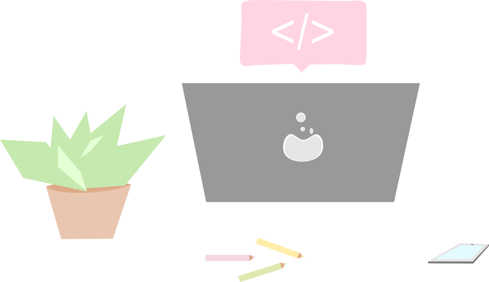
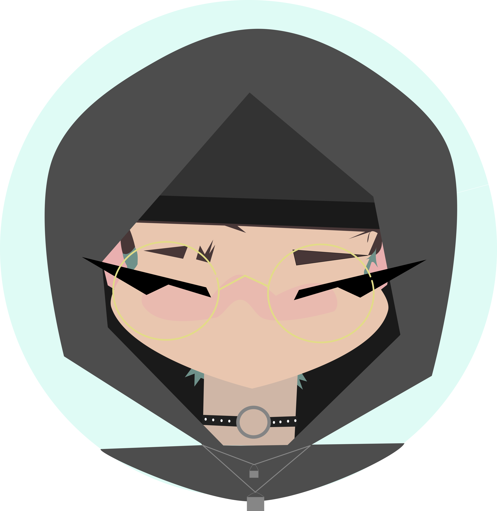

Heureuse de vous avoir vu cliquer sur mon site ! 👋
Je me présente je suis Popielarz Manon, jeune Graphiste junior
Je m'interesse tout particulièrement au design
et cherche une alternance dans ce domaine.
J'ai acquis mes connaissances grâce à ma licence d'arts numériques 💻
Je vous laisse à présent, et n'hésitez pas à me contacter au besoin ☕

B
ienv
enue sur mo
n sit
e !Graphisme
Section en cours de construction !
Veillez patienter...
✨
Web Developpement
Ci-dessous vous trouverez les sites sur lequels j'ai déjà travaillé.
Vous pouvez cliquer dessus pour vous y rendre directement, ou trouver son repository GitHub !

Objectif : Appliquer les maquettes web, tablettes, mobile

Objectif : Appliquer une maquette mobile et créer une version tablette et web, créer des animations et maitrise de SASS

Objectif : Optimiser le site (Performances, SEO)

Objectif : Créer le frontend à l'aide de Bootstrap et Javascript
Autres
Je m'interesse à tout ce qui touche au multimédia.
J'aime énormement le montage vidéo et ai eu l'occasion grâce à mon parcours,
de pouvoir réaliser diverses vidéos allant du cours métrage, à la promotion
Cliquez ici pour découvrir mes productions vidéos !
Au sein de mon parcours, j'ai eu l'occasion de travailler avec des équipes en vue de créer des jeux vidéos
Mon travail était centré sur le design, la communication et promotion,
la composition musiquale et d'autres encore !
C'est sans nul doute, les projets ou j'ai le plus
appris à m'adapter, travaiiller en équipe ainsi qu'a faire preuve de polyvalance
Cliquez ici pour découvrir mon travail au sein du jeu vidéo !
A propos / Contacts
Diplomée de licence EVMAN (Etudes Visuelles, Multimedia et Arts Numériques) à l'université Gustave Eiffel,
j'ai obtenu celle-ci avec une mention assez bien. 🎓
Cette licence aux divers sujets m'a permis d'appendre à être polyvalente et à m'interesser à beaucoup de choses du domaine.
J'ai par exemple effectué un stage à la mairie de Noisy-Le-Grand pour un poste de photographe,
Ou encore, créer une vidéo pour la promotion du conservatoire de musique dans lequel j'étudie : le Conservatoire Maurice Ravel.
Vous pouvez retrouver toutes mes autres créations dans l'onglet "Autres"

Merci d'avoir lu jusque là ! Vous pouvez trouver mes contacts ci-dessous (Mail, Linkedin...)!
Je suis toujours prête à apprendre de nouvelles choses !
En espérant vous revoir !